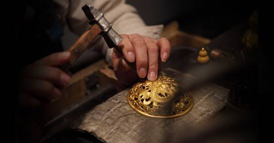
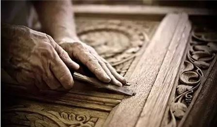

陆建新：用工匠精神书写“中国高度”
每到一座城市，人们总是喜欢登上充满现代感、设计感的摩天大楼，俯瞰城市美景。这一座座醒目的“城市地标”，不但让人们在云端尽览城市的飞速变迁，更能直观感受我国建筑技术在全球建筑史上的卓越进步。
当年，世界第一高楼上海环球金融中心、广州第一高楼广州西塔、深圳第一高楼京基100和如今的深圳第一高楼——平安金融中心便是这样的标志性建筑。而它们的背后，都指向一个共同的名字——陆建新，这位不断谱写中国城市新高度的人。
乐于学习：37年执着前进
打开陆建新37年的“成绩簿”，是让许多建筑业同行望尘莫及的高度：
参建工程44项，总高度3600多米；国内已封顶的7座100层以上钢结构摩天大楼，陆建新主持承建了其中4座……
赫赫战功之下，是37年坚守一线的汗水挥洒，是37年拼搏奋斗的精神积淀，也是37年不断学习的创新之魂。
将时钟拨回到37年前，那是1982年，18岁的陆建新测量专业中专毕业后，进入了中建工作，成为一名测量技术员，一干就是14年。
陆建新将这段日子当作打基础、勤积累的好时机。他白天在施工现场奔波，晚上或研读技术书籍，或与工友们伏案探讨，日复一日年复一年地积累、提升。公司每引进一台新设备，他都要深入工地，潜心研究其原理和使用技能；工地上的绝大多数设备，他都能熟练使用。这段经历，为他此后一步步成长为项目总工程师、项目经理、大区总工程师，乃至成为如今中国钢结构行业专家，提供了非常宝贵的知识积累和经验储备。
如今，陆建新仍然保持着学习的习惯，工作再忙也要抽时间读书。不仅如此，他还加强CAD等专业制图软件的学习，以应对信息时代的发展。“熟练程度让不少年轻人都追不上。”中建钢构装配式事业部执行总经理许航说。
勇于创新：不断征服新挑战
“拓荒牛精神”，是深圳新时期建设者的共同特征。折射在陆建新身上，则是勇于创新、勇于挑战的优秀作风。
目前，陆建新正在负责建设粤港澳大湾区的新地标——深圳国际会展中心，这是一项新的高难度挑战，工程长度1.8公里，总用钢量达27万吨，相当于6座鸟巢的面积。
万丈高楼平地起，需要建筑知识的结晶和精细到毫米的施工技术共同成就。
“管理协调、技术难度很大，比如最大一个展厅的金属屋面面积达5万多平方米，既要‘颜值’高，又要能抗台风、防漏水等。”陆建新的同事张弦告诉记者，“技术团队组建以来一年半的时间里，他带领团队成员前后改了10遍施工设计稿。他经常跟我们说，技术是给现场生产输送炮火的第一线，要保证方案的先进性和交底的及时性。”
如今，深圳国际会展中心项目在陆建新的带领下不但完成了“国家十三五课题”示范工程验收，还发表核心期刊论文14篇，获得19项专利受理。

扎根一线：持之以恒的坚守
完成挑战很艰难，而更难的是持之以恒，是长达数十年的坚守
“按照陆建新的年龄、贡献、资历，调到中建钢构总部来、进入公司管理层，是完全可以和应当的。实际上，我们早就已经有了这样的动议，并且找他谈话。但是，他的心思都在工地上，只要工作还需要他，他就一天不停下来。”中建钢构董事长王宏说。
“陆总拒绝了单独的办公室，每天和我们在一间办公室里面共同工作。他基本上每天都是早上6点半上班、晚上10点以后才回宿舍休息。展厅桁架结构首次吊装不顺利，他爬上三层楼的顶端亲自指挥近10个小时……”张弦说，正是在这种精神的感染之下，会展团队被“点燃”了，在400余天的时间内完成27万吨钢结构的安装，相当于每两个月就施工完成一座鸟巢，并成功经受住了高温、暴雨、超强台风“山竹”等考验。
如今的陆建新，依然扑在一线。建筑是他所热爱的事业，在祖国的大地上书写新的高度是他充满自豪感的追求。“建筑是城市发展面貌的体现，作为建筑工程人员，建造出让世人称奇的建筑是我们的奋斗目标。”陆建新说。
何为工匠？一砖一瓦，一凿一砌，令尽身精血聚其中，命理念思想隐其内，其中艰辛历历在身而不足与外人道。更有甚者终其一生不得人知，受世辱人骂，历亲疏友离，身后数年才为人知晓，因之赞其清誉，痛其苦难，叹其成就，谓其工匠。不以得享富贵而物喜，不以历受惨遇而己悲，此不正为“天降大任于是人也”乎？夕梵高毕师，尽是如此；红楼西游，亦合此道，此诚谓之工匠。 余观今民风浮躁，人心难古。求利益，轻信仰；求效率，轻品质；求表外，轻灵魂；求短益，轻长远。遍观中华大地，尽是追名逐利；纵览历代史书，不乏投机偷生。但凡誉之尽心者，凤毛麟角；称之工匠者，寥若星辰。凡有志者，应念及此。


位置：位置：小冷是来自神秘领域的陌生人，说太多会被抓 联系电话：XXXXXXXXXXX 电子邮箱：XXXXXX@XX.com
版权所有©小冷